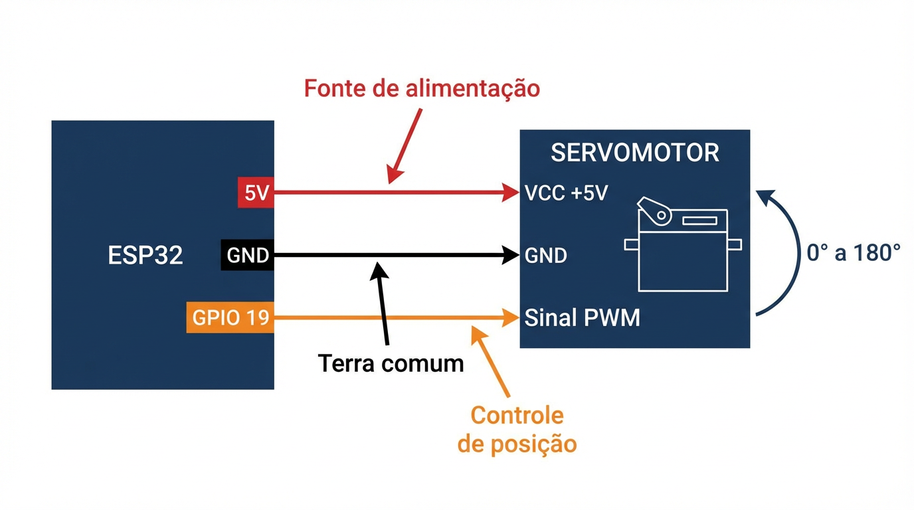

Faculdade de Tecnologia do Senac (FATESE)
Curso: Análise e Desenvolvimento de Sistemas
Aula 05 — Atuadores e PWM
Atividade prática (Wokwi) — circuito
Prática 2 — Servomotor
(GPIO 19 — Sinal PWM)
Esquemático
Conexão do servo com terra comum e sinal no GPIO 19 para simular uma cancela/tranca.
Controle: 0°–180°

Sinal
GPIO 19
Pulso define o ângulo (biblioteca faz o mapeamento).
Alimentação
5V (VCC)
No Wokwi pode funcionar em 3,3V; em hardware real, prefira 5V.
Terra comum
GND
ESP32 e servo devem compartilhar o mesmo GND.
Atenção
Servos podem puxar muita corrente. Use fonte dedicada e GND comum.
Checklist (Wokwi)
Itens essenciais antes de rodar o código do servo.
1
Terra comum
Conecte GND (ESP32) ao GND (Servo).
2
Pino de sinal correto
Use GPIO 19 no circuito e no código (attach(19)).
3
Alimentação do servo
No simulador, 5V funciona bem. Em hardware real, avalie fonte dedicada.
PWM do servo é diferente do PWM do LED
Servo hobby usa 50 Hz e a posição é definida pela largura do pulso (≈ 1–2 ms), não por duty 0–100%.
No próximo slide
Vamos programar o servo com a biblioteca ESP32Servo e os comandos write(0), write(90) e write(180).
Dica: em hardware real, evite alimentar servo diretamente do 5V da placa; use fonte dedicada e mantenha GND comum.
GPIO 19
VCC 5V
GND